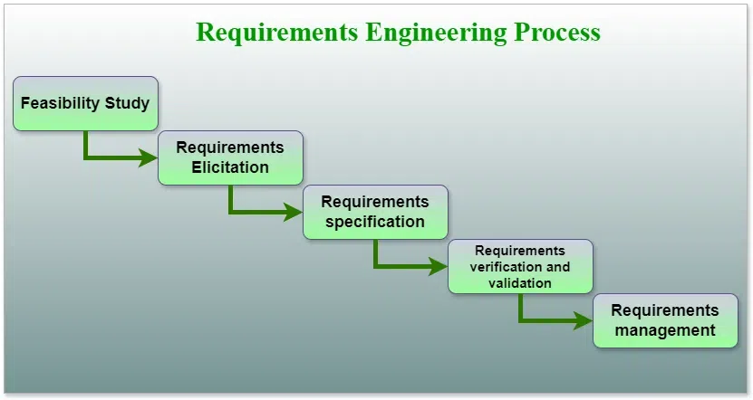

4.2 Requirements Engineering Process
Requirements Engineering (RE) is the process of identifying, eliciting, analyzing, specifying, validating, and managing the needs and expectations of stakeholders for a software system.
A systematic and strict approach to the definition, creation, and verification of requirements for a software system is known as requirements engineering. To guarantee the effective creation of a software product, the RE process entails several tasks that help in understanding, recording, and managing the demands of stakeholders. It runs during the requirements phase of the SDLC and feeds directly into design, implementation, and testing.

1. Feasibility study
The feasibility study mainly concentrates on five areas listed below. Among these, economic feasibility is the most important part of the feasibility analysis, and legal feasibility is less commonly considered in practice.
- Technical feasibility: Current resources — both hardware and software — along with the required technology are analyzed to assess whether the project can be developed. This study reports whether the correct resources and technologies are available, whether the technical team has the required skills and capabilities, whether existing technology can be used, and whether maintenance and upgradation will be easy for the chosen technology.
- Operational feasibility: The degree to which the system can provide the required service is analyzed, along with how easy the product will be to operate and maintain after deployment. Other operational scopes include determining the usability of the product and whether the solution suggested by the software development team is acceptable to the users.
- Economic feasibility: The cost and benefit of the project are analyzed in detail. This includes all costs for final development — hardware and software resources, design and development costs, and operational costs. After that, it is analyzed whether the project will be financially beneficial for the organization or not.
- Legal feasibility: The project is ensured to comply with all relevant laws, regulations, and standards. It identifies any legal constraints that could impact the project and reviews existing contracts and agreements. Legal feasibility also considers intellectual property issues such as patents and copyrights to safeguard the project's innovation and originality.
- Schedule feasibility: The project timeline is evaluated to determine if it is realistic and achievable. Significant milestones are identified, deadlines are established, and resource availability is assessed to ensure that necessary resources are accessible to meet the project schedule. Any time constraints that might affect project delivery are also considered.
Further detail is covered in §4.8 and SPM initiation in Topic 3 §3.2.
2. Requirements elicitation
Requirements elicitation is related to the various ways used to gain knowledge about the project domain and requirements. The various sources of domain knowledge include customers, business manuals, existing software of the same type, standards, and other stakeholders of the project.
- Elicitation does not produce formal models of the requirements understood — instead, it widens the domain knowledge of the analyst and helps in providing input to the next stage.
- Requirements elicitation is the process of gathering information about the needs and expectations of stakeholders for a software system, and it is critical to the success of the software development project.
- The goal of this step is to understand the problem that the software system is intended to solve and the needs and expectations of the stakeholders who will use the system.
Techniques used for requirements elicitation include:
- Interviews: One-on-one conversations with stakeholders to gather information about their needs and expectations.
- Surveys: Questionnaires distributed to stakeholders to gather information about their needs and expectations.
- Focus groups: Small groups of stakeholders brought together to discuss their needs and expectations for the software system.
- Observation: Observing stakeholders in their work environment to gather information about their needs and expectations.
- Prototyping: Creating a working model of the software system to gather feedback from stakeholders and validate requirements.
- Other techniques include brainstorming, task analysis, and the Delphi technique (see §4.3).
- It is important to document, organize, and prioritize the requirements obtained from all these techniques to ensure that they are complete, consistent, and accurate.
3. Requirements specification
Requirements specification is used to produce formal software requirement models. All requirements — including functional, non-functional, and constraints — are specified by these models in totality.
- During specification, more knowledge about the problem may be required, which can again trigger the elicitation process.
- The models used at this stage include ER diagrams, data flow diagrams (DFDs), function decomposition diagrams (FDDs), and data dictionaries (see §4.10, §4.11, §4.12).
- Requirements specification is the process of documenting the requirements identified in the analysis step in a clear, consistent, and unambiguous manner, and it also involves prioritizing and grouping requirements into manageable chunks.
- The goal is to create a clear and comprehensive document that describes the requirements for the software system and is understandable by both the development team and the stakeholders.
Types of requirements commonly specified:
- Functional requirements: These describe what the software system should do — functionality such as input validation, data storage, and user interface.
- Non-functional requirements: These describe how well the software system should perform — quality attributes such as performance, reliability, usability, and security.
- Constraints: These describe any limitations or restrictions that must be considered when developing the software system.
- Acceptance criteria: These describe the conditions that must be met for the software system to be considered complete and ready for release.
- Requirements should be written in natural language using simple terms, avoiding technical jargon, and using a consistent format throughout the document.
- Diagrams, models, and other visual aids should be used to communicate the requirements effectively.
- Once specified, requirements must be reviewed and validated by stakeholders and the development team to ensure they are complete, consistent, and accurate (see §4.14).
4. Requirements verification and validation (V&V)
- Verification: Refers to the set of tasks that ensure the software correctly implements a specific function — checking that requirements are complete, consistent, accurate, clear, testable, and free of errors.
- Validation: Refers to a different set of tasks that ensure the software that has been built is traceable to customer requirements — checking that requirements meet the needs and expectations of stakeholders.
If requirements are not validated, errors in the requirement definitions would propagate to successive stages, resulting in a lot of modification and rework.
Main checks in the V&V process:
- Requirements should be consistent with all other requirements — no two requirements should conflict with each other.
- Requirements should be complete in every sense.
- Requirements should be practically achievable.
Methods used for V&V:
- Reviews, buddy checks, and making test cases are some of the methods used for verification and validation.
- Verification involves reviewing the requirements document, models, and diagrams, and holding meetings and walkthroughs with stakeholders.
- Validation involves testing requirements through simulation, prototypes, and the final version of the software.
- V&V is an iterative process that occurs throughout the software development life cycle — it is not a one-time activity and should continue even in the maintenance stage.
- It is important to involve both stakeholders and the development team in the V&V process.
5. Requirements management
Requirements management is the process of analyzing, documenting, tracking, prioritizing, and agreeing on requirements and controlling communication with relevant stakeholders. This stage takes care of the changing nature of requirements.
- The SRS should be as modifiable as possible to incorporate changes in requirements specified by end users at later stages.
- Modifying the software as per requirements in a systematic and controlled manner is an extremely important part of the requirements engineering process.
- The goal of requirements management is to ensure that the software system meets stakeholder needs and is developed on time, within budget, and to the required quality.
Key activities in requirements management:
- Tracking and controlling changes: Monitoring changes throughout development, identifying the source of each change, assessing its impact, and approving or rejecting it.
- Version control: Keeping track of different versions of the requirements document and other related artifacts.
- Traceability: Linking requirements to other elements of the development process such as design, testing, and validation.
- Communication: Ensuring requirements are communicated effectively to all stakeholders and that changes or issues are addressed promptly.
- Monitoring and reporting: Monitoring development progress and reporting on the status of requirements.
- Requirements management helps prevent scope creep and ensures that requirements stay aligned with project goals (see §4.7).
Supporting activities: analysis and documentation
Analysis and documentation run throughout the RE process rather than as isolated one-time steps:
- Requirements analysis (§4.5) structures raw elicited information, determines feasibility, consistency, and completeness, resolves conflicts, and assigns priorities.
- Requirements documentation (§4.6) records requirements in natural language, models, decision tables, and use cases.
Tools involved in requirements engineering
- Observation reports — for recording findings from stakeholder observation sessions.
- Questionnaires (surveys, polls) — for collecting structured input from many stakeholders.
- Use cases and user stories — for describing functional requirements from the user's perspective.
- Requirement workshops — for collaborative, facilitated sessions with multiple stakeholders.
- Mind mapping — for visually organising ideas and relationships during elicitation.
- Role-playing — for simulating user scenarios to discover hidden requirements.
- Prototyping — for validating requirements with working or mock-up models before full development.
Stages in the software engineering process (summary view)
Requirements engineering is a critical process that involves identifying, analyzing, documenting, and managing requirements. The stages are:
- Elicitation: Requirements are gathered from customers, users, and domain experts to identify the features and functionalities the software system should provide.
- Analysis: Requirements are analyzed to determine feasibility, consistency, and completeness, and to identify and resolve conflicts or contradictions.
- Specification: Requirements are documented in a clear, concise, and unambiguous manner so all stakeholders can understand them.
- Validation: Requirements are reviewed and validated to ensure they meet the needs of all stakeholders and are accurate, complete, and consistent.
- Management: Requirements are managed throughout the software development lifecycle, and any changes are properly documented and communicated.
Effective requirements engineering is crucial to project success — it helps ensure the software system meets stakeholder needs and is delivered on time, within budget, and to the required quality standards.
Advantages of the requirements engineering process
- Helps ensure that the software being developed meets the needs and expectations of stakeholders.
- Can help identify potential issues or problems early in the development process, allowing adjustments before significant cost is incurred.
- Helps ensure that the software is developed in a cost-effective and efficient manner.
- Can improve communication and collaboration between the development team and stakeholders.
- Provides an unambiguous description of requirements, which helps reduce misunderstandings and errors.
- Helps identify potential conflicts and contradictions in requirements, which can be resolved before development begins.
- Helps ensure the software system is delivered on time, within budget, and to the required quality standards.
- Provides a solid foundation for the development process, which helps reduce the risk of failure.
Disadvantages of the requirements engineering process
- Can be time-consuming and costly, particularly if the requirements-gathering process is not well-managed.
- Can be difficult to ensure that all stakeholders' needs and expectations are taken into account.
- It can be challenging to ensure that requirements are clear, consistent, and complete.
- Changes in requirements can lead to delays and increased costs in the development process.
- It can be time-consuming and expensive, especially if requirements are complex.
- It can be difficult to elicit requirements from stakeholders who have different needs and priorities.
- Requirements may change over time, which can result in delays and additional costs.
- There may be conflicts between stakeholders, which can be difficult to resolve.
- It may be challenging to ensure that all stakeholders understand and agree on the requirements.
- As a best practice, requirements engineering should be flexible, adaptable, and aligned with the overall project goals.
Q: Explain the Requirements Engineering process. Describe all five main phases with their key activities, and state the advantages and disadvantages of a formal RE process.
Model answer points:
- Define RE as identifying, eliciting, analyzing, specifying, validating, and managing stakeholder needs for a software system.
- Feasibility study: five types — technical (resources, technology, team skills), operational (usability, maintainability), economic (cost-benefit, most important), legal (laws, IP), schedule (timeline, milestones, resources).
- Elicitation: gather domain knowledge from customers, manuals, existing systems; techniques — interviews, surveys, focus groups, observation, prototyping; document and prioritize results.
- Specification: produce formal models (DFD, ERD, FDD, data dictionary); specify functional, non-functional, constraints, acceptance criteria; write in clear natural language with diagrams.
- V&V: verification = requirements correct and consistent; validation = requirements meet stakeholder needs; checks — complete, consistent, achievable; methods — reviews, buddy checks, test cases; iterative throughout SDLC.
- Management: track changes, version control, traceability, communication, monitoring; prevent scope creep; SRS should be modifiable.
- Tools: observation reports, questionnaires, use cases, workshops, mind mapping, role-playing, prototyping.
- Advantages: shared baseline, early error detection, cost-effective development, better communication, reduced failure risk.
- Disadvantages: time-consuming, changing requirements, stakeholder conflicts, difficulty achieving completeness and agreement.